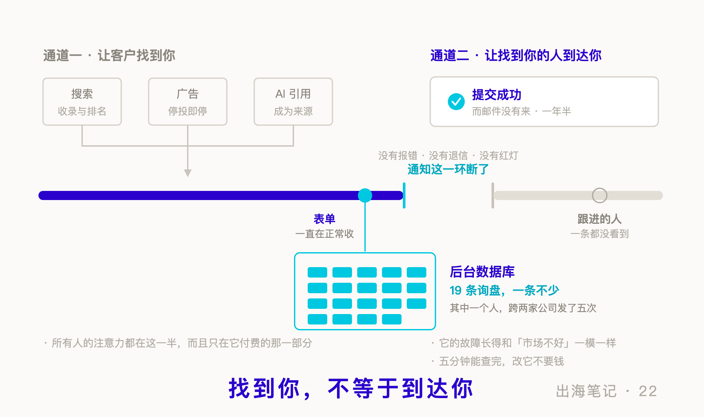

序言：网站验收那天之后，你还打开过它吗
大多数外贸企业的网站，是这样一段人生：找一家建站公司，谈价格，选模板，把产品图和参数发过去，等两个月，上线，验收，付尾款。
然后就没有然后了。
之后每年做的事只剩两件：续域名和主机，以及——投广告。
我想先说一个不太舒服的事实：在网站这件事上，绝大多数外贸企业只有付费动作，没有免费动作。
不是不想做。是根本不知道有什么可以做。网站交给了建站商，建站商做完就走了，剩下的部分你看不见，也没人告诉你那里面还有东西。
而“看不见的部分”其实分成两条通道：
通道一：让客户找到你。 搜索、广告、现在还多了 AI 引用。
通道二：让找到你的人到达你。 表单、通知、后续跟进。
几乎所有人的注意力都在通道一，而且只在它的付费那一半。
我算是做得比较多的那一类。上传产品的时候，后台跳出一栏叫“关键词”，我会认真想想客户会怎么搜，敲进去几个词。很多年都这么做。
但我心里一直有个说不清的空——我不知道我填进去的这些字，最后有没有真的到达搜索引擎那里。
那时候我不懂代码。后台给我一个框，我往里放东西，然后它就消失在某个我看不见的地方。
后来我学会了看网页源代码。第一次去查的时候，我发现了两件事：
第一，我填的那个框，确实变成了网页里的一行标签。
第二，那行标签，谷歌从 2009 年就不读了。
也就是说：我做了比大多数人更多的动作，而那个动作是空转的。
这一期讲的，就是这两条通道各自漏在哪儿。而我原本以为重点在第一条。
通道一 · 让客户找到你
一、普通人最容易自查的，是三个位置
先把话说清楚，这不是建站商骗人。
搜索引擎早年确实读一个叫 meta keywords（关键词标签） 的东西——你可以理解成网页额头上贴的一张小纸条，写着“我这一页讲的是这些”。后来它被滥用得太厉害，谁都往上写一百个词。2009 年，谷歌公开说明：网页搜索排名不使用这个标签。必应大同小异，百度也说影响极小。
它没有被删除，只是没人读了。 而建站系统那个框还留着，因为改后台比改习惯难。
所以填了那个框的人，做的是一件失效的事；而大多数人连那个框都没填过——效果是一样的：两边都没有到达。
搜索引擎实际会参考的东西不止三样——正文、页面上的显著文字、指向你的链接文字、结构化数据，都算。但不懂代码的人能自己打开、自己看懂、自己判断有没有问题的，是下面这三个：
页面标题（title）——浏览器标签页上那一行字，也是你在搜索结果里看到的蓝色大标题。它是搜索结果里最显眼的一行。
页面描述（meta description）——搜索结果里标题下面那两行灰字。它不参与排名，而且谷歌经常按用户搜的词自己改写它。但它是你唯一能主动写的那句“点进来的理由”。
正文主标题（H1）——页面上那个最大的、告诉人“这一页在讲什么”的标题。它得是被标记过的标题，不能只是一段字号调大的普通文字。没有它，页面不会因此消失，但你少给了搜索引擎一条最清楚的结构信号。
这三个位置里，只有第一个通常有人管。后面两个，大多数外贸站是空的。
我去查了自己手上那个能改的英文站。产品页的描述，一条都没有。 不是写得不好，是那一栏从头到尾就是空的——意味着客户在搜索结果里看到的那两行摘要，全部由搜索引擎自己从页面上随便抓，抓到什么算什么。
还有一处更隐蔽。那些页面的主标题，代码里写的是把一段文字嵌在标题标签里面——写法上是错的，浏览器解析到那儿会提前把标题标签关掉，于是标题掉在了外面。
页面上看起来一切正常。字号是对的，位置是对的，人眼完全看不出来。 但对搜索引擎而言，那些页面从上线那天起就没有过主标题。
这个错误在那儿放了好几年。不报错、不变形、不影响任何人使用——它没有任何一个会让人发现它的出口。
二、验收那天：「大部分已经调整了」
我想说的重点其实不是那几个标签，是它们背后那道墙。
后台里的字段名，和搜索引擎实际读的东西，是两套词汇。你填了一个框，但那个框映射到哪一行代码、那行代码还有没有用——你在后台里没有任何办法验证。你做了动作，收不到反馈。
这才是外贸人和 SEO 之间那道墙的真正材质。不是技术难——难的是：你无法知道对方做的事有没有落地。
一件你无法验证的事，就会变成一件你只能相信的事。
所以这次我换了个写法。给网站维护方发整改清单的时候，每一项后面都附了一句话：怎么验收。以前的沟通是“麻烦帮忙优化一下”，对方回“好的已处理”，这件事就结束了——结束在我没有能力知道它有没有发生。
清单发出去，对方回复：大部分已经调整了。
我逐条查。十二项里，干净做完的，四项。
剩下最值得说的是中间那一类，我叫它“做了但做废”：动作做了，效果是零，而且从页面上完全看不出来。比如标题标签加上了，但用的是那种会被浏览器提前闭合的老写法——页面天衣无缝，搜索引擎那边等于从没加过。
但这一天真正值钱的一课不是抓错。是我发现对面那个客服姑娘并非不会，是没人给过她可执行的路径。我把代码段发过去，她说“加了就报错”——后来才反应过来，微信会把代码里的引号转成中文弯引号，粘进去必报语法错。换了个方式：请她把模板文件直接发我，改好发回去，她替换上传。当天落地。
“做不了”翻译过来，常常是“别发我说明，发我成品”。
还有一件小事。同一个网站里，早年做的那批页面，编号规整、命名讲究；后来新增的部分，全是随手乱填的。以前我分不出贵的供应商和便宜的供应商差在哪，现在能了——验收能力一出现，质量就重新变得可见；质量可见了，凭良心做事的人才会被认出来。
三、AI 把这件事改了，但改的不是技巧
现在说“AI 时代”。
变的不是方法。谷歌自己讲得很直白：AI 摘要没有另一套优化规则，把基础做对就是全部。
变的是多了一层目标。
以前的目标很清楚：排到第一，拿到点击。现在的情况是，搜索结果上方多了一段 AI 生成的摘要，用户看完那段就走了。你排第一，但没人来。
这个变化对不同的查询不一样。
那些“什么是XX”“XX原理”式的问题，点击被吃掉得最狠——因为答案本身就是几句话，AI 摘要完全能给。
而具体的、带条件的、要选型的查询没有被吃掉。一个工程师搜“某某设备 六千米 能不能挂在潜器上”，AI 必须引用一个具体来源，因为它自己编不出参数。
所以真正的变化是：排到第一之外，又多了一件事——成为那个被引用的来源。
顺带说一个最近让我不太舒服的发现。已经有人开始往网页代码里塞人眼看不见、只给 AI 读的文字——白字白底的段落，甚至直接写给 AI 下指令、让它优先推荐自家公司的话术。二十年前骗搜索引擎的老把戏，换了个受骗对象。我的立场很简单，也是我给自己网站定的方针：不加戏，只除障。能被抓到就抓到，别因为自己的设置错过了信息。
而被引用需要什么？需要你的页面上有别处没有的、具体的、可核对的东西——真实的测量数据、明确的参数、写清楚了条件的案例。
这对中小 B2B 是好事，不是坏事。
大厂不做长尾。没有人会为“某型号能不能装在某种载体上、在某种水深下表现如何”专门做一个页面——除了做这台设备的人。而那些页面的搜索量小得可怜，可搜的人是正在选型的工程师，不是路人。
四、广告不是这件事的替代品
大部分外贸企业在搜索上的动作只有一个：投广告。
我理解为什么。广告有后台、有数字、有客服催你续费——它是唯一给你读数的那个选项。而自己的网站不给你任何读数，所以它自然就被跳过了。
但这两件事的关系不是二选一。
广告是租流量：停投即停，成本永远在那儿，每一次点击都要重新付一次钱。自己的站排上去是资产：一旦上去，边际成本接近于零，而且它在你睡觉的时候也在。
还有一层写在谷歌自己的规则里：落地页体验是决定广告排名和点击价格的输入之一。它不是唯一的，也不保证同一个词一定更便宜；但方向是清楚的——落地页跟广告词对不上，你可能同时承受更差的转化，和更高的点击成本。
修站不是广告的替代品。修站是广告的乘数。
通道二 · 让找到你的人到达你
五、提交成功
写到这儿，我原本准备结尾了。这一期的结论本来是“去把那三个位置补上”。
然后我做了一件很小的事：用我自己的邮箱，去填了一次我们自己网站的询价表单。
随便填了点内容，点提交。页面弹出一行绿字：提交成功。
邮件没有来。
不是那一次没来。是从一年半前的某一天起，一条都没来过。
表单一直在收，数据一直好好地存在数据库里，前端一直弹“提交成功”——只有“通知我”那一环断了，而且断得没有任何声音。没有报错，没有退信，没有任何一个地方会亮红灯。
等我去翻后台记录的时候，里面躺着十九条询盘。
十九条都已经进了后台，却一条都没有到过负责跟进的人面前。
有一个人，为了找到我们，跨两家公司发了五次。
这件事让我把整篇文章重读了一遍。
前面四节讲的全是通道一——怎么让更多人找到你。而通道一做得再好，它的产出全部要经过通道二才能变成人。
桶是漏的时候，往里灌水没有意义。
更麻烦的是，通道二的故障有一个特别的性质：它长得和“市场不好”一模一样。
询盘变少，你会归因到经济、到淡季、到 SEO 没做好、到广告没投够。这些归因都指向“再多花点钱”。而真实原因是一行代码，改它不要钱。
它甚至会自我印证：你据此加大投入，询盘仍然不见涨，于是你更加确信“这行生意就是难做”。
一条坏掉的计量通道，比任何竞争对手都更能让你相信自己不该努力。
六、不花钱能做的几件
这不是方法论。技术那一侧我刚做完，效果需要时间，我还不知道结果。所以这是一份可以照着查的清单。
先查通道二——它比通道一优先，而且五分钟就能查完。
第一，用你自己的邮箱，去填一次你自己网站的询价表单。
填完等着。收不到，问题就找到了。收到了，再看它进没进你真正会看的那个邮箱——很多人的表单通知发去了一个五年没人登录的地址。
第二，去后台看有没有一张「留言列表」。
绝大多数建站系统都会把表单内容存一份在数据库里。通知会断，存档通常不会。 打开它，从最早的一条往下翻。如果你看到的记录数比你记忆中收到的多——那个差额就是你这些年真正失掉的东西。
第三，给自己设一个能兜底的入口。
把询价页上的邮箱地址写成明码，别只留一个表单。表单会坏，邮箱不会。我们那些年真正接到的客户里，有一部分就是因为看到了旁边那个邮箱地址，才绕过了坏掉的表单。
再查通道一。
第四，去看你自己网站的源代码。
任意浏览器，产品页上右键，“查看网页源代码”。搜三个东西：<title>、meta name="description"、<h1>。
不用懂代码，就看它们有没有内容。描述是空的？主标题根本找不到？那你已经找到了第一批要改的地方。
第五，装 Google Search Console，然后用它检查收录。
免费，五分钟。它是唯一能告诉你“别人实际用哪个词搜到了你”的东西——那是真实发生的搜索，不是估算。
装完做三件事：看它报告的收录页面数，跟你实际有多少页对一对；找到你网站真正的站点地图并提交给它（不一定在 /sitemap.xml，得问建站商）；顺便看一眼 robots.txt 有没有误封了自己的页面——没有这个文件是正常的，写错了才是问题。
第六，内容那一侧，比技术这一侧值钱。
产品页的标题别只写型号。写型号 + 它是什么 + 买家会加的那个限定条件。搜的人不会打你的内部叫法。
还有一件被严重低估的事：把实测数据单独做成页面。一次作业一页，写清设备、条件、结果。这种东西竞品仿不了——假数据行内人一眼就看出来——而它正好是 AI 时代最容易被引用的形态。
第七，给供应商的每一项要求，写上怎么验收。
“帮忙优化一下”是许愿；“改完之后，我打开某个页面的源代码应该看到什么”，才是要求。这一条不花钱，但它把你和供应商的关系从相信换成了核对——这是网站这件事上最贵的一次升级。
尾声：有一个结论，只是不是我原本要给的那个
这一期本来打算什么都不下结论。
通道一的东西我刚做完，测量工具也是刚装的，数据还是零。排名会不会动、多久动、动多少，我现在说什么都是在编。那部分还得等三个月。
但通道二当场就有了结论，而且比我预想的重。
我先给其中三条意向最明确的询盘补了回信，如实告诉对方——你的消息我们收到了，只是通知那一环坏了，抱歉让你等了这么久。之后几天，剩下的也都补完了。
那三条，全回了。
隔了一年半，人还在，事还在。有一位已经换了公司，把信转到新邮箱继续谈；有一位告诉我，他们过去一直是租设备的，现在开始考虑买。而没有一个人介意迟到这件事——其中一位回信的第一句是：很高兴你们的表单现在能用了。
这是我没有预料到的一层：我原本以为这是一次亡羊补牢，结果发现羊还在栏里等着。
所以如果这一期只能留下一句话，我希望是这句：
在你想让更多人找到你之前，先确认已经找到你的人，能不能到达你。
在那之前，如果你手上有一个英文站，可以先做那两件最小的事——用你自己的邮箱去填一次自己的询价表单；然后打开产品页，右键，看一眼源代码里那三个位置是不是空的。
你可能会发现，你认真填了很多年的那些字，从来没有到达过任何地方。
而更可能的是——别人认真写给你的那些字，也一样。
出海笔记，记录一家中国海洋仪器公司出海路上的实操与反思。